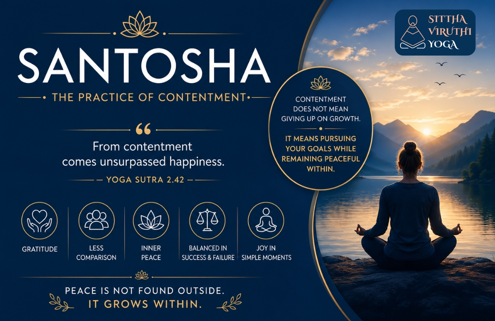

Santosha — The Practice of Contentment
The Yoga Sutras of Patanjali is one of the most respected texts in yogic philosophy. Among the teachings are the Niyamas — the personal disciplines that guide an individual towards self-growth and harmony. The second of these Niyamas is Santosha, meaning contentment.

Core Sutra on Santosha
“Santoṣād anuttamaḥ sukha-lābhaḥ.”— Yoga Sutra 2.42
Translation: “From contentment comes unsurpassed happiness.”
Santosha — Contentment from Within
Santosha is the practice of being at peace with what we have, who we are, and where we are in the present moment. It does not mean lack of ambition or giving up on growth. Rather, it teaches us to live without constant dissatisfaction.
In today’s world, the mind is often pulled towards comparison, competition, and the endless pursuit of “more.” Santosha gently reminds us that true happiness is not found outside us, but within us.
A content mind becomes calm, grateful, and steady.
What Santosha Really Means
Contentment is not passive acceptance. It is the ability to appreciate life as it unfolds while continuing to act with sincerity and purpose.
A person practicing Santosha:
- Appreciates what they already have
- Avoids unnecessary comparison
- Finds joy in simple moments
- Remains balanced during success and failure
- Understands that peace is an inner state, not an external achievement
Santosha creates emotional stability. It helps reduce restlessness, anxiety, and the constant feeling that something is missing.
Understanding Santosha Through Everyday Examples
In NatureA tree does not compare itself to another tree. It grows steadily according to its own nature. Likewise, Santosha teaches us to honour our own journey without comparison.
In EducationA student who studies sincerely and accepts results with maturity experiences less stress than one constantly worried about ranking above others. Contentment allows effort without unhealthy pressure.
In RelationshipsWhen people stop expecting perfection from others, relationships become lighter and more compassionate. Santosha encourages acceptance and gratitude in human connections.
In Professional LifeSuccess achieved without inner peace often leads to burnout. A content person can work hard and pursue goals while still remaining mentally balanced and fulfilled.
In Spiritual PracticeMeditation becomes deeper when the mind is not chasing constant desires. Santosha helps create inner silence and clarity.
Why Santosha Matters Today
Modern life often promotes the idea that happiness depends on possessions, status, or achievement. Yet even after reaching goals, many continue to feel incomplete.
Santosha shifts the focus from “What am I lacking?” to “What is already present in my life?”
This simple shift creates:- Gratitude
- Emotional resilience
- Mental peace
- Simplicity
- Greater self-awareness
Contentment allows us to enjoy the present without being trapped by endless wanting.
Practicing Santosha in Daily Life
Santosha can be cultivated through small conscious habits:
- Beginning the day with gratitude
- Spending less time comparing oneself with others
- Appreciating simple experiences
- Accepting situations that cannot be controlled
- Practicing mindfulness and meditation
- Finding joy in effort rather than only in results
Over time, these practices help develop a peaceful and balanced state of mind.
Conclusion
Santosha is the quiet art of inner fulfillment. It teaches that peace does not come from having everything, but from valuing what already exists within and around us.
In the wisdom of Patanjali’s teachings, contentment is not weakness — it is strength. It is the foundation for a life lived with clarity, gratitude, and lasting happiness